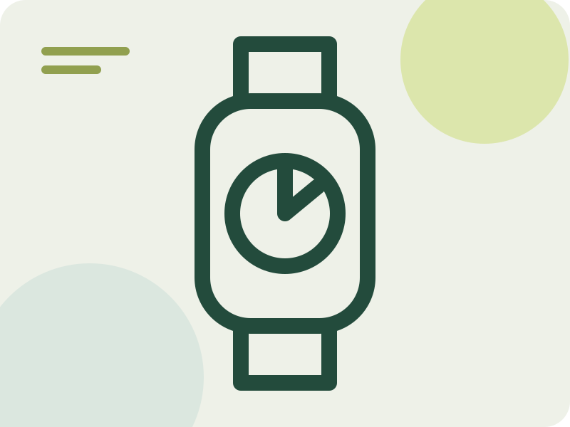

Pebble Legacy Firmware Patcher
- The repository describes a tool for patching original Pebble Technology watch firmware for the continuing ecosystem.

Fallback · not project imagery- 1/5 dimensions have verifiable sources
- Repository metadata supports only docs/community. Other dimensions remain null, so this discovery stays To verify and is not yet rated.
Candidate route
- Candidate use Evaluate migration and service-continuity paths while retaining original firmware
- Hardware scope Original Pebble firmware packages and watch families listed by upstream scripts and documentation
- What is known The repository describes a tool for patching original Pebble Technology watch firmware for the continuing ecosystem.
- GitHub Tool to patch firmwares from original Pebble Technology Corp watches into the future
- Evidence note Repository metadata/README points to Original Pebble firmware packages and watch families listed by upstream scripts and documentation; this pass confirmed the upstream material only and did not verify installation, compatibility, or rollback on an exact device, so the entry remains an E0 discovery lead.
- Review record PS-pebble-legacy-firmware-patcher · 2026-10-23T17:05:02Z
Before you start
- Do not flash, disassemble, or buy parts without installation and recovery material for the exact model, hardware revision, and firmware.
Repository snapshot
- Archived No; not archived when checked
- Last push 2025-11-12T08:16:13Z
- Default branch master
- API license identifier NOASSERTION
- The license snapshot does not automatically cover firmware, models, images, trademarks, or third-party components; a recent push does not prove compatibility.